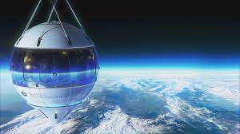
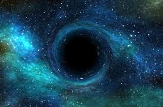

About Space
Space, in its most fundamental sense, refers to the vast expanse that exists beyond Earth and its atmosphere, encompassing all celestial objects, interstellar regions, and the fabric of the universe itself. It is a complex and awe-inspiring domain that has captivated human curiosity for centuries. From a scientific perspective, space is characterized by its three-dimensional nature, where objects and events occur within a vast, seemingly infinite volume. It is the arena in which celestial bodies, such as stars, planets, moons, asteroids, and comets, exist and interact through the gravitational forces that govern the dynamics of the cosmos. Space is not a mere emptiness devoid of matter. Instead, it is filled with a diverse array of physical entities, including gases, dust particles, cosmic rays, and electromagnetic radiation. These constituents collectively form what is commonly known as the interstellar medium, which plays a crucial role in the formation and evolution of galaxies, stars, and planetary systems. Furthermore, space is characterized by the absence of a significant atmosphere and the presence of extremely low density and pressure. These conditions allow for unique phenomena to occur, such as the propagation of light over vast distances, the absence of air resistance, and the formation of a vacuum—a region devoid of matter. The understanding of space has been greatly advanced through the fields of astronomy, astrophysics, cosmology, and space exploration. Telescopes, both ground-based and space-based, have provided invaluable insights into the distant regions of space, enabling us to observe and study celestial objects and phenomena with great precision. Space exploration, undertaken by various space agencies and organizations, has allowed humanity to venture beyond the confines of Earth, sending probes, satellites, and manned missions to explore other celestial bodies, such as the Moon, Mars, and beyond. These endeavors have expanded our knowledge of the universe, provided technological advancements, and sparked the human imagination about the possibilities that lie beyond our home planet. Moreover, the study of space has profound philosophical and existential implications. It invites contemplation about our place in the universe, the origins of life, the existence of other intelligent beings, and the ultimate fate of the cosmos. It raises profound questions about the nature of reality, the limits of human knowledge, and the potential for future discoveries and advancements. In summary, space encompasses the vast expanse beyond Earth, comprising celestial objects, interstellar regions, and the fabric of the universe. It is a multidimensional domain filled with matter, energy, and cosmic phenomena. Our exploration and understanding of space continue to expand, offering glimpses into the mysteries of the cosmos and shaping our perception of the universe and our place within it.
|  |  |